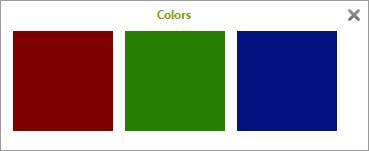
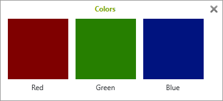
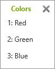
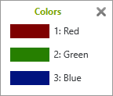
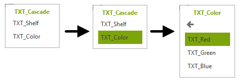

Choicelists
Choicelists allow the user to select one of multiple options. They exist in two viewtypes List and Tile.
create_oap provides two convenience functions to create choicelists:
create_action_choicelistThis creates an actionlist, links it to an action and returns this action, so it can be added to wherever OAP allows actions. The actionlist can be extended with function
add_item.create_interactor_choicelistThis method does the same as above and creates an interactor containing the action.
Creating a choicelist using one of these two methods automatically decides if a tile or a list dialog
is used. The decision depends on whether an image, a text or both are used in add_item.
Text |
Image |
ViewType |
GUI in pCon.planner |
|---|---|---|---|
default |
 |
||
default |
 |
||
default |
 |
||
enforce ActionChoiceViewType.List |
 |
{kind=link}
{kind=link}
List
When adding text-only items the script defaults to ActionChoiceViewType.List and shows a list.
1 ac_choice = oap.create_action_choicelist("SetColor", title = "SetColor")
2
3 # get the actionlist to add items to
4 acl = ac_choice.actionchoice.actionlist
5
6 for color in ["red","green","blue"]:
7 action_name = color
8 ac_set_color = oap.create_action_propchange_set_value(action_name, "GSE_ColorProp", OfmlSymbol(color))
9
10 txt = oap.get_or_create_text(f"set_{color}")
11
12 # using only a text results in a List
13 acl.add_item(ac_set_color, txt)
Tiles
As soon as an image is used, the script defaults to ActionChoiceViewType.Tile and will show tiles.
Any text is optional here.
1 ac_choice = oap.create_action_choicelist("SetColor", title = "SetColor")
2 acl = ac_choice.actionchoice.actionlist
3
4 for color in ["red","green","blue"]:
5 action_name = color
6 ac_set_color = oap.create_action_propchange_set_value(action_name, "GSE_ColorProp", OfmlSymbol(color))
7
8 txt = oap.get_or_create_text(f"set_{color}")
9 img = oap.get_or_create_image_set(color, ImageSize.tile_medium)
10
11 # using an image results in a dialog with tiles
12 acl.add_item(ac_set_color, txt, img)
List with images
In order to get a list with images (the size for the material images in property editors), use an image and
enforce displaying a list with ActionChoiceViewType.List. Use ImageSize.list_default for
material flags 50x18 pixels.
This is the recommended image size for list images and supported by all pCon applications.
1 ac_choice = oap.create_action_choicelist("SetColor", title = "SetColor")
2
3 # setting viewtype explicitely to List, although there is an image
4 ac_choice.actionchoice.viewtype = ActionChoiceViewType.List
5
6 acl = ac_choice.actionchoice.actionlist
7
8 for color in ["red","green","blue"]:
9 action_name = color
10 ac_set_color = oap.create_action_propchange_set_value(action_name, "GSE_ColorProp", OfmlSymbol(color))
11
12 txt = oap.get_or_create_text(f"set_{color}")
13 img = oap.get_or_create_image_set(color, ImageSize.list_default)
14
15 acl.add_item(ac_set_color, txt, img)
List with custom sized images
Despite OAP recommending a dimension of 50x18 pixels for list images, you can use any other dimension as well. The following example shows a customized dimension.
1 ac_choice = oap.create_action_choicelist("SetColor", title = "SetColor")
2
3 # setting viewtype explicitely to List, although there is an image
4 ac_choice.actionchoice.viewtype = ActionChoiceViewType.List
5
6 acl = ac_choice.actionchoice.actionlist
7
8 for color in ["red","green","blue"]:
9 action_name = color
10 ac_set_color = oap.create_action_propchange_set_value(action_name, "GSE_ColorProp", OfmlSymbol(color))
11
12 txt = oap.get_or_create_text(f"set_{color}")
13 img = oap.get_or_create_image_set(color, ImageSize.custom(50, 40))
14
15 acl.add_item(ac_set_color, txt, img)
Note
Lists with custom sized images are currently only supported by pCon.basket online. Every other application scales list images to the standard size of 50x18px.
Cascading choicelists
An ActionChoice can contain any kind of action. That means this Action can be another ActionChoice.
create_oap supports creating nested choices with the function
add_nested.
It is often convenient to define helper functions for adding items to each “level”.
Every nested ActionChoice is different. So the helper functions have to be different for every usecase. Let’s see what it looks like for a very simple task: an ActionChoice that prints the selected action to a message window.
Note
Messages currently are not shown when using online-applications like pCon.box.
{kind=link}

Let’s first define two small helper functions to create the sub-ActionChoice and the Actions.
add_sub_level creates a new ActionChoice within the given one and uses the given name as both,
the text to be displayed in the list and the title for the next level. Also it is used as action’s
name in oap-tables.
1# supportive funcs
2def add_sub_level(acl_global, name):
3 # add a new ActionList to the given one
4 acl = acl_global.add_nested(name,
5 title = oap.get_or_create_text(name),
6 text = oap.get_or_create_text(name),
7 )
8
9 # return the newly created actionlist
10 return acl
11
12def add_sub_action(acl, main_name, sub_name):
13 title = main_name + "_" + sub_name
14 ac = oap.create_action_no_action(title) # action with a separate ID for each entry, doing nothing
15 acl.add_item(ac, oap.get_or_create_text(sub_name))
Now these helper functions can be used like this:
1# create an interactor with a choicelist
2ia = oap.create_interactor_choicelist("Cascade")
3
4# get the actionlist for this interactor to add some actions to it
5acl_global = ia.get_actionlist("Cascade")
6
7# add a title (optional)
8ia.actions["Cascade"].actionchoice.title = oap.get_or_create_text("Cascade")
9
10# call supportive helper function to create a main-option
11acl = add_sub_level(acl_global, "Shelf")
12# add the sub-options
13add_sub_action(acl, "Shelf", "Wood")
14add_sub_action(acl, "Shelf", "Fabric")
15add_sub_action(acl, "Shelf", "Metal")
16
17acl = add_sub_level(acl_global, "Color")
18add_sub_action(acl, "Color", "Red")
19add_sub_action(acl, "Color", "Green")
20add_sub_action(acl, "Color", "Blue")